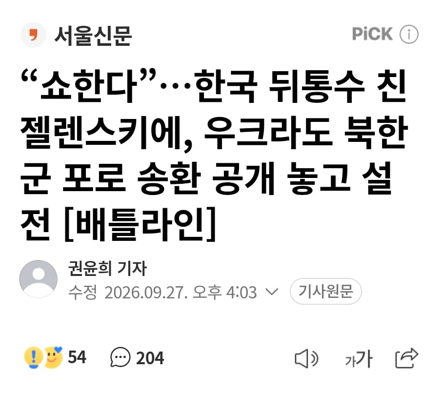
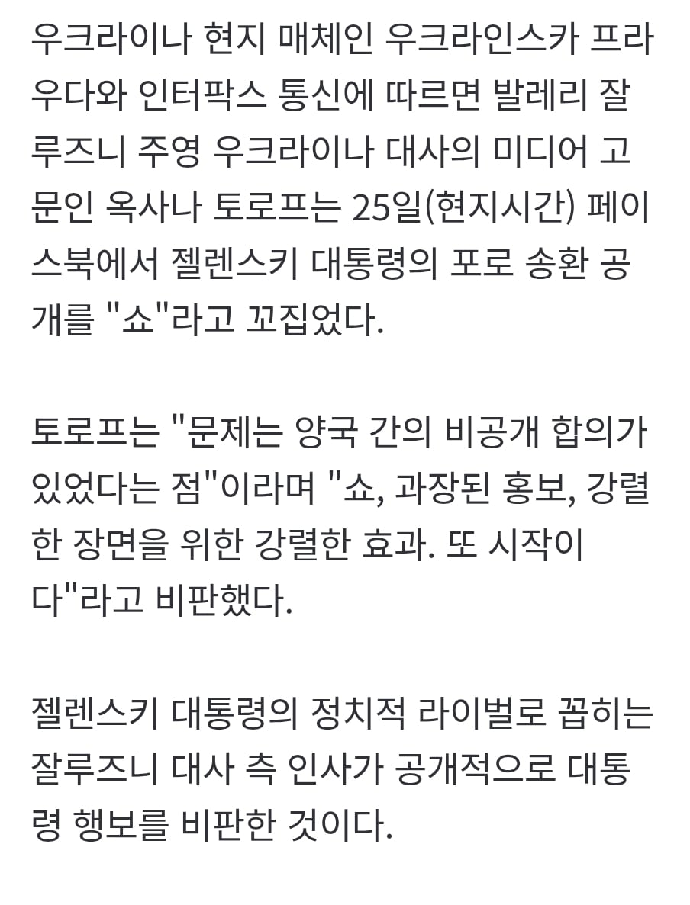

보통 탈북이라는게 보통 세뇌가 풀린, 탈출할 의지가 있는 사람이 하는건데 전쟁중에 포로가 될 바에 자살하는거 보면 왔을때 적응이나 할 수 있을까 불안해.
ㄹㅇ 난 아직도 그 자폭할때 김정은 장군님 만세 하는 미친새끼 기억난다
남은 가족들이라도 일 당하지말라는 마음아니었을까
이거 같긴해 혼자 죽을꺼 가족 몰살로 바뀌는데 안 외치는게 이상한거지
그렇게 안하면 가족들 다 죽인다 함
안 하면 가족들이 수용소에 끌려가거나, 총살 당함
인터뷰 영상이라도 찾아보지
영상이라도보고 적어라 왜 그렇게 자폭해야만하는지 다말해줌 자폭안하면 북에있는 가족들 다죽인다고 세뇌시키고 전쟁보낸다고함
니가 관심이 가던말던
우리 입장에선 타국 분쟁이고 거기에 포로가 생기든 말든 관심 안 두고 싶었을 거. 받아봤자 시끄럽기만 하지 이득될 게 하나도 없음.
걍 우크라가 '인도적인 입장으로' 포로 떠넘겼는데 우리가 무기 안 판다니 "안 줘? 삐저뜸". 하면서 확 공개해버린 거라 봄. 무기 안 주면 다른 분탕 친다는 선분탕인 거지.
걍 추정이니 아니라고 생각하면 그것도 맞음
젤렌스키 라이벌이 젤렌스키 물어뜯으려고 하는 걸 곧이곧대로 믿음?
저거 믿으면 포로 북송 계획설도 믿는 거 맞지?
우크라이나 신문에서 그랬는데?
우리나라 신문에 북송 계획 실린게 있나?
ㅇㄱㄸ들 주장 실은 건 있지
우크라 신문에서 우크라 ㅇㄱㄸ끼리 싸우는 거 실은 것첫넘

ㅋㅋㅋㅋㅋㅋㅋㅋㅋㅋ 짤 개웃기네
이걸 공개해서 어느쪽이 더 이득을 보는가 생각해보면 뭐
몇년전부터 우크라이나는 우리나라를 지들 전쟁에 못끌여들여서 안달인데
저런 새끼들은 그런거 생각 하겠냐?
병신 새끼들이 우크라이나 욕하는데 우크라이나는 절대 비밀 약속 못해
젤렌스키가 아니라 그 어떤 나라 지도자 라도 비밀약속 못한다
푸틴도 이대통령도 안하겠다
그걸 이해도 못하는 병신들뿐임
그런 병신들은 왜 그런 약속 못하는지 이해되면 "아 그래도 시기도 고려 해야죠" 같은 개소리 할 병신 새끼들 임
그렇게 따지면 한국에서 정부 측 입장 비판하는 건 야당이 라이벌인 여당 물어뜯으려고 하는 건데 그건 어떻게 곧이곧대로 믿고? ㅋㅋㅋ
어느쪽이건 우리 입장에선 젤렌스키한테 욕나올 상황은 맞는듯.. 적어도 신병 인도가 될때까진 조용히 하던가
저건 그냥 돈 안준다고 강짜를 부리는거로밖에 안보임
신병인도는 되고 나서 떠든거 아닌가? 하튼 우크라이나 좆같은 짓하는건 맞음
아 신병 인도 되고 떠든거였음?
몰랐네
물론 그렇다고 ㅈ같지 않은건 아님
근데 신병 인도되어도 아예 안밝히는게 베스트인지라
당연하지
원인은 un총회에서 젤렌스키가 일방적으로 밝혀서 이 사단난거..
쇼로 대통령했고
쇼로 구국의 영웅이 됐는데
당연히 이번에도 젤랜스키가 쇼 한다고 생각하면 됨
우구라
개인의 이득을 위해 국가의 이익을 버리는거지
외교 씹창 알빠노 내가 대통령 오래 해먹는게 더 개이득인거지
이걸 우리가 찐빠내야 할 이유가 전혀없는데 계속 우크라편드는 놈들은 신기하긴함 ㅋㅋ
니가 멍청 해서 임
개드립에서 기사 여럿 보니까 우크라가 도발해서 우리나라 끌어들이려는 거랑 친러성향 정치인들이 우크라 까면서 손때게하려는거 보이는데 우리나라가 지금 중요한 포지션인가?
지금 러시아가 북한 지원 받아서 숨 좀 돌리는데 우리나라가 북한 수준으로 참전하면 러시아 입장에선 재앙이지
우크라이나가 필요로 하는 무기들을 우리가 갖고 있음
근데 우크라이나는 공짜로 "줘" 이러니까
ㅋㅋㅋ 포로 보내지마 그럼
아시아의 폴란드라고 대우도 폴란드급으로 해주네.
우크라이나가 왜 합의 해줘
그리고 이미 우크라이나 장관인가 뭔가 답을 줬잖아
미쳤다고 아시아 포로 둘 때문에 우크라이나가 비밀 유지 하겠냐?
정치병자 새끼들은 저능아 새끼들인가?
왜 우크라이나가 비밀유지 약속 안하는지 이해를 못하면 나가 뒤져라
합의했으면 합의문 있겠지 ㅋㅋㅋ 아 이것도 합의문이 필요없을 정도로 잘된 합의라 합의문 없는거 아니지?
이상하게 북한포로에 관심이 안가네.. 그냥 탈북자 1이라 그런가